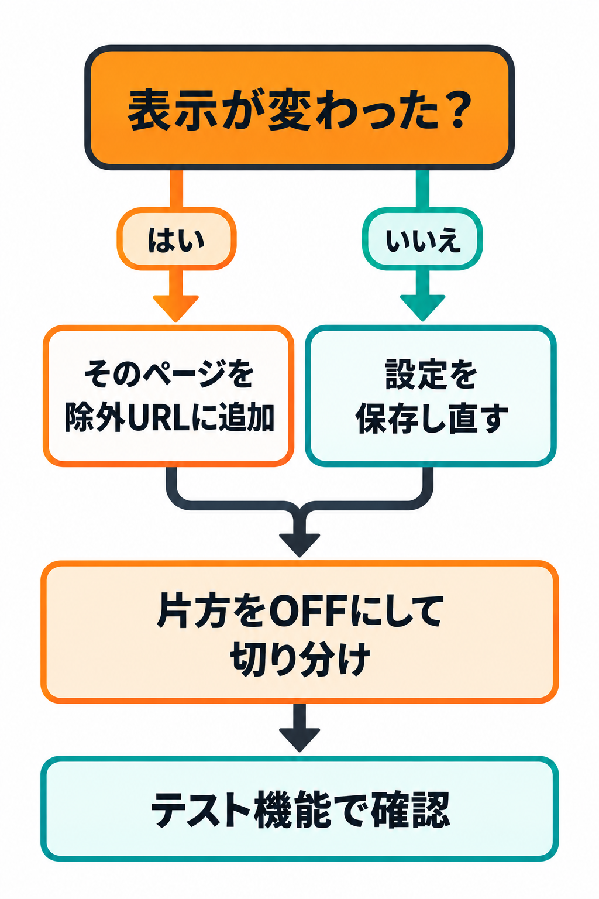

トラブルシューティング
「思ったとおりにならない」ときの、症状・原因・利用者にできる対処をまとめます。
症状から探す
| 症状 | 考えられる原因 | 利用者にできる対処 |
|---|---|---|
| 特定のページだけ表示が変わった | そのページのHTMLに、クリーニングすると表示が変わる書き方がある | 除外URLにそのページのURLを追加して保存します。そのページだけが対象外になります。 |
| 表示が変わって困っている | コメント除去・空行除去のどちらかが影響している | 片方をOFFにして保存し、どちらが原因かを切り分けます（例: 「空行除去」をOFFにする）。 |
| コメントが消えない | 「コメント除去」がOFF、またはそのページが除外URLになっている | 「コメント除去」をONにして保存します。除外URLにそのページがないかも確認します。 |
| 空行が消えない | 「空行除去」がOFF、そのページが除外URL、またはキャッシュが残っている | 設定をONにして保存します。キャッシュ系のプラグインを使っている場合は、キャッシュを消して再読み込みします。 |
| 設定したのに反映されない | 「設定を保存」を押していない、またはキャッシュが残っている | もう一度「設定を保存」を押します（「設定を保存しました。」を確認）。それでも変わらなければキャッシュを消します。 |
| 管理画面が変わっていないか心配 | 仕様どおりの動作 | 管理画面・REST API・フィード・サイトマップ・robots.txt は対象外です。クリーニングされるのは公開ページだけなので、管理画面が変わることはありません。 |
| テスト結果が入力をそのまま返す | 両方の設定がOFF、または除外URLに当てはまっている | 「コメント除去」「空行除去」のどちらかをONにして保存し、もう一度テストします。 |
| コード表示の中身が変わっていないか心配 | — | pre や textarea、スクリプト・スタイルの中身は一切変更しません。心配なときはHTMLクリーニング テストで確認できます。 |
切り分けの手順

1
まず設定を保存し直します。
2
HTMLクリーニング テストで、そのページの一部を貼って結果を確認します。
3
表示が変わる場合、「コメント除去」と「空行除去」を片方ずつOFFにして、どちらが原因かを確かめます。
4
そのページだけを残したい場合は、除外URLに追加して保存します。
取り消したいとき: 設定はいつでも元に戻せます。チェックを元の状態にして「設定を保存」を押すと、公開ページは元のHTMLに戻ります（保存した内容がそのまま反映されます）。
アンインストールすると: 保存した設定は消えます。公開ページは元どおりになります（クリーニングを行わなくなります）。